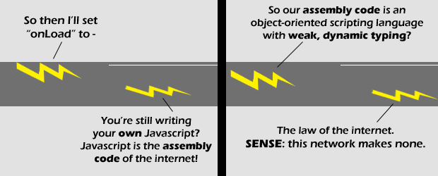

Comic JK 467
When I Feel Like It
⇤
<
?
>
⇥

⇤
<
?
>
⇥
Forum
.
RSS
.
Digg
.
Facebook
.
Reddit
.
Twitter
.
Stumbleupon
Enter your thoughts on polywell fusion reactors here. Please, no spamming, trolling, or phreaking. Your mother writes web code using FORTRAN. This strikes me as hilarious because I just started programming in Assembly for the Parallax Propeller. I would much prefer Javascript! - wasp -> I'd prefer yo momma - Catholic. >>I'd prefer your father - Negative Twothn --> You must be Catholic, too, eh? -> Then why the hell don't you use SPIN? I'd love to see python as a web script as well as a server language... >I'd love to see assembler as a web scripting language >>I'd love to see FORTH available for web scripting >>>Come on INTERCALScript! >>>>I'd love to see lolspeak java! >>>>>they need to make a script that is in plain english.... >>>>>>Or Lojban! >>>>>>I'd prefer to see less use of scripting where it isn't actually beneficial or necessary... sorry, I know I'm being ridiculous now... :| ^^^^^^^^^^^^^ PERL ! Your all pwnd. -byi >>>>>>>>>>>>>>I'd love to see Ruby as a web scripting language... Oh, wait. >>>>>>>>>>>>>>>LaTeX. Oh, wait: SEPARATE STYLE FROM CONTENT!!! Function.prototype.curry = function() { var method = this, args = Array.prototype.slice.call(arguments); return function() { return method.apply(this, args.concat(Array.prototype.slice.call(arguments))); }; }; ^^^ Show me anothe language that isn't a Lisp dialect that can do currying so easily! ->Hindi. I hear people from India make excellent curry. ->> OMFG!! LOL!! LITERAL LOL!!! That. Was. Funny. ->>> Indeed! ->>>> Best. Pun. EVER! ->>Or Lojban! >Haskell is even easier! curry = id >>Or 3Code: CURRY[]= >>>Or Prolog: Yes. (Wait, that was the result, not the code...)